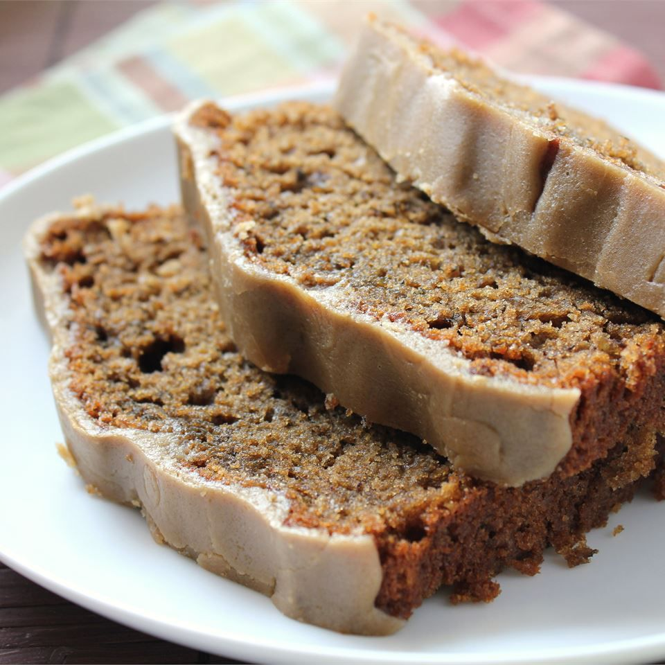

Home
Caramel Macchiato Banana Bread

Fluffy luscious banana bread with coffee infusion and a caramel glaze
Ingredients
- Cooking spray
- 2 cups all-purpose flour
- 1 teaspoon baking powder
- 1 teaspoon baking soda
- 1/2 teaspoon ground cinnamon
- 1/8 teaspoon salt
- 2 large very ripe bananas
- 1/2 cup caramel macchiato-flavored liquid coffee creamer
- 2/3 cup white sugar
- 2 eggs
- 2 tablespoons instant coffee granules
- 6 tablespoons unsalted butter
- 6 tablespoons packed brown sugar
- 1 teaspoon vanilla extract
Instructions
- Preheat oven to 350 degrees F. Spray a 9x5-inch loaf pan with cooking spray
- Whisk flour, baking soda, baking powder, cinnamon, and salt together in a bowl
- Mash bananas in a large mixing bowl with a fork until almost smooth. Stir in coffee creamer, sugar, oil, eggs, and instant coffee granules until coffee granules have dissolved. Gradually stir in flour mixture, about 1/2 cup at a time, until batter is almost smooth. Pour batter into the prepared loaf pan.
- Bake in the preheated oven until a toothpick inserted into the center of the loaf comes out clean, about 1 hour. Allow to cool before removing from pan, about 30 minutes.
- While the bread is cooling, melt butter in a saucepan over medium heat. Mix in brown sugar and vanilla and bring to a boil, stirring to dissolve sugar. Reduce the heat and simmer syrup for 3 minutes. Remove from the heat and let cool to a warm but liquid temperature.
- Pour glaze over cooled banana bread. Serve when glaze has set.